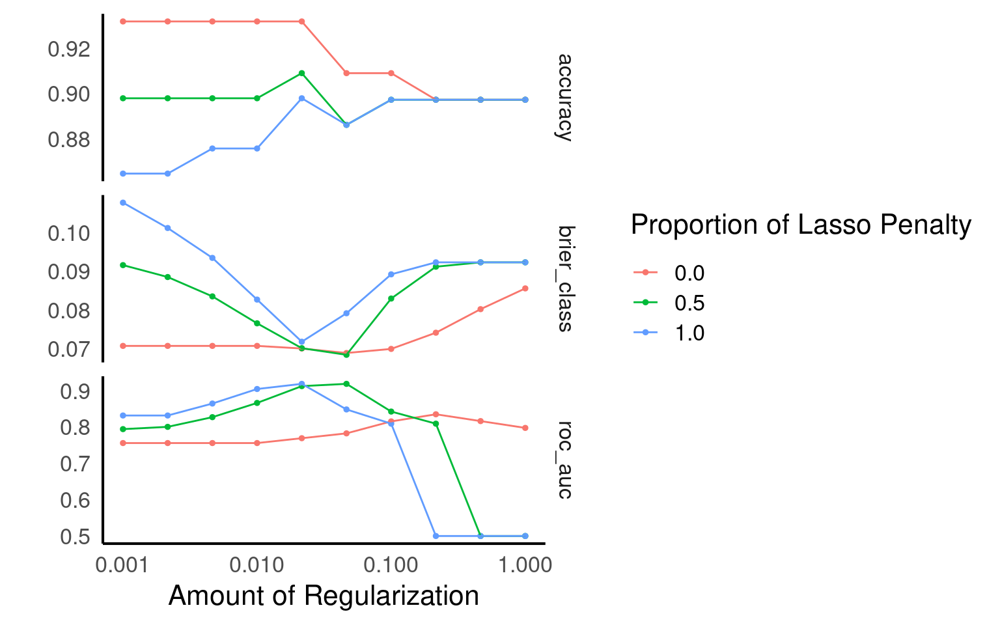
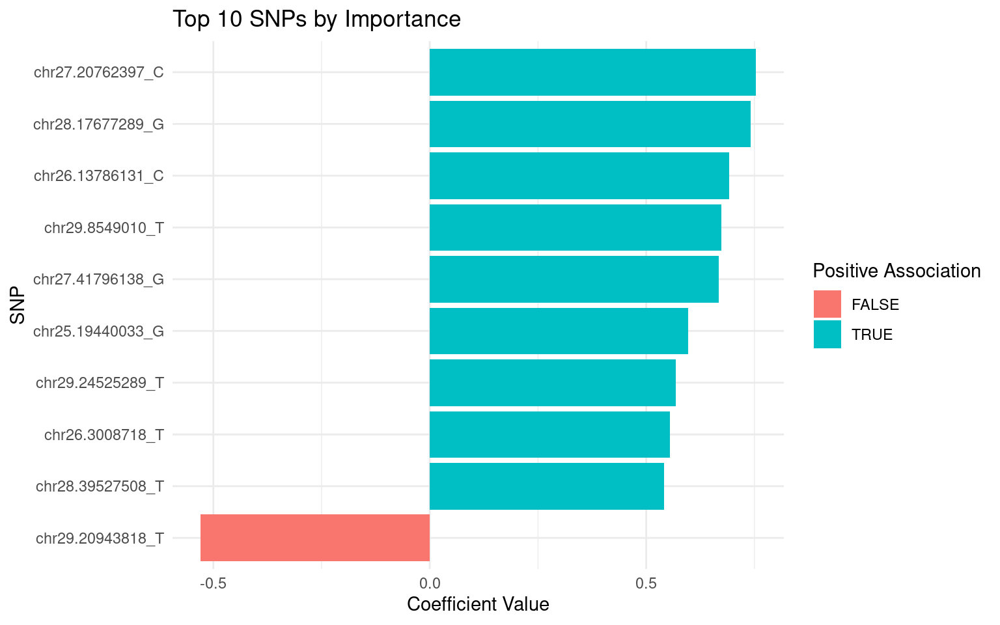

21 Building a Logistic Classifier: From Regression to Classification
In this exercise, we’ll extend what you’ve learned about regression models in tidymodels to classification problems. We’ll use genetic data to predict cleft lip in dogs, helping you understand how the tidymodels workflow adapts to classification tasks.
21.1 Introduction to Classification
While regression predicts continuous values (like age from methylation data), classification predicts categorical outcomes (like presence/absence of cleft lip). The fundamental tidymodels workflow remains similar, but with some important differences we’ll explore.
21.2 The Dataset: Dog Cleft Lip and SNP Genotypes
We’ll use a dataset containing SNP (Single Nucleotide Polymorphism) genotypes from Nova Scotia Duck Tolling Retrievers, with some dogs affected by cleft lip and others unaffected.
# Load required libraries
library(tidymodels) # Loads the entire tidymodels framework
library(data.table) # For reading the data
library(dplyr) # For data manipulation
library(ggplot2) # For visualization
# Set seed for reproducibility
set.seed(121)
# Read the dataset
dogs <- fread(here("data", "dogs_imputed_reduced.raw"))
dogs <- dogs |>
select(-c(IID, FID, PAT, MAT, SEX))
# Convert phenotype from 1/2 coding to 0/1 coding for logistic regression
dogs <- dogs |>
mutate(PHENOTYPE = as_factor(PHENOTYPE))
# Look at the first few rows
head(dogs, 3)
# Check dataset dimensions
print(paste("Number of dogs:", nrow(dogs)))
print(paste("Number of SNP features:", ncol(dogs)-1))
# Examine class distribution
dogs |>
count(PHENOTYPE) |>
mutate(proportion = n/sum(n))| PHENOTYPE | chr25.11293074_A | chr25.19440033_G | chr25.23946569_A | chr25.24073769_C | chr25.50815850_A | chr25.52465894_G | chr26.3008718_T | chr26.4305281_G | chr26.5245240_A | chr26.13786131_C | chr26.20592521_T | chr26.23041171_G | chr26.31616144_T | chr26.31709165_G | chr26.34872278_A | chr26.36158846_A | chr27.11303738_T | chr27.20762397_C | chr27.22451184_C | chr27.24404699_C | chr27.25190620_T | chr27.41796138_G | chr27.46937382_G | chr28.15538728_C | chr28.16074084_T | chr28.17677289_G | chr28.18398636_G | chr28.26822971_G | chr28.31089904_A | chr28.32230015_G | chr28.39527508_T | chr28.40933345_C | chr29.6900624_G | chr29.8549010_T | chr29.13709991_G | chr29.16492959_A | chr29.20943818_T | chr29.23503804_A | chr29.24525289_T | chr29.29116808_C | chr29.30958662_G | chr29.32818481_C | chr29.36491804_T | chr29.37724282_T | chr29.39749180_C |
|---|---|---|---|---|---|---|---|---|---|---|---|---|---|---|---|---|---|---|---|---|---|---|---|---|---|---|---|---|---|---|---|---|---|---|---|---|---|---|---|---|---|---|---|---|---|
| 2 | 0 | 0 | 1 | 1 | 0 | 1 | 1 | 0 | 1 | 0 | 0 | 0 | 0 | 1 | 1 | 1 | 1 | 1 | 1 | 0 | 0 | 0 | 0 | 0 | 0 | 2 | 2 | 0 | 1 | 1 | 1 | 0 | 0 | 2 | 1 | 0 | 0 | 0 | 0 | 0 | 1 | 1 | 1 | 0 | 0 |
| 2 | 0 | 0 | 0 | 1 | 0 | 1 | 2 | 1 | 1 | 0 | 0 | 0 | 0 | 2 | 1 | 1 | 1 | 1 | 1 | 0 | 0 | 0 | 0 | 0 | 0 | 2 | 2 | 0 | 1 | 1 | 1 | 0 | 1 | 1 | 0 | 1 | 0 | 0 | 2 | 1 | 0 | 1 | 1 | 0 | 0 |
| 1 | 0 | 0 | 1 | 2 | 0 | 0 | 0 | 0 | 0 | 0 | 0 | 1 | 0 | 0 | 0 | 0 | 0 | 0 | 0 | 0 | 0 | 0 | 0 | 0 | 1 | 0 | 1 | 0 | 0 | 0 | 2 | 1 | 0 | 1 | 1 | 1 | 1 | 1 | 1 | 0 | 0 | 0 | 0 | 0 | 0 |
[1] "Number of dogs: 125"
[1] "Number of SNP features: 45"| PHENOTYPE | n | proportion |
|---|---|---|
| 1 | 112 | 0.896 |
| 2 | 13 | 0.104 |
Notice that our dataset is imbalanced - only a small proportion of dogs have cleft lip (PHENOTYPE = 1). This is an important consideration for classification problems.
21.2.1 From Linear to Logistic Regression
Logistic regression is one of the most common classification algorithms. It’s similar to linear regression, but uses a logit transformation to predict probabilities between 0 and 1.
21.2.2 Task 1: Creating a Train/Test Split
Just like with regression, we should evaluate our model on data it hasn’t seen during training. But for classification, especially with imbalanced classes, we need to ensure both training and testing sets contain examples of both classes.
# Create a stratified split to preserve class proportions
# Fill in the missing parameter
dogs_split <- initial_split(dogs, prop = 0.7, strata = PHENOTYPE)
# Extract the training and testing sets
dogs_train <- training(dogs_split)
dogs_test <- testing(dogs_split)
# Check that both sets contain examples of both classes
dogs_train |> count(PHENOTYPE)
dogs_test |> count(PHENOTYPE)| PHENOTYPE | n |
|---|---|
| 1 | 78 |
| 2 | 9 |
| PHENOTYPE | n |
|---|---|
| 1 | 34 |
| 2 | 4 |
21.2.3 Task 2: Creating a Logistic Regression Model
In tidymodels, specifying a logistic regression model is similar to linear regression, but we use logistic_reg() and set the mode to “classification”.
# Create a logistic regression model specification
# Fill in the blanks based on what you know about model specification in tidymodels
log_reg_spec <- logistic_reg() |>
set_engine("glm") |>
set_mode("classification") # This is new compared to regression!
# Create a simple recipe (we'll just use the raw predictors for now)
log_recipe <- recipe(PHENOTYPE ~ ., data = dogs_train) |>
step_normalize(all_predictors())
# Create a workflow combining the model and recipe
log_workflow <- workflow() |>
add_model(log_reg_spec) |>
add_recipe(log_recipe)
# Fit the model to the training data
log_fit <- fit(log_workflow, data = dogs_train)
# Take a peek at the fitted model
log_fit══ Workflow [trained] ══════════════════════════════════════════════════════════
Preprocessor: Recipe
Model: logistic_reg()
── Preprocessor ────────────────────────────────────────────────────────────────
1 Recipe Step
• step_normalize()
── Model ───────────────────────────────────────────────────────────────────────
Call: stats::glm(formula = ..y ~ ., family = stats::binomial, data = data)
Coefficients:
(Intercept) chr25.11293074_A chr25.19440033_G chr25.23946569_A
-36.4970 4.7339 9.7773 -0.9764
chr25.24073769_C chr25.50815850_A chr25.52465894_G chr26.3008718_T
9.4525 -0.9438 4.5172 6.3745
chr26.4305281_G chr26.5245240_A chr26.13786131_C chr26.20592521_T
-4.0473 2.0150 9.2334 9.8972
chr26.23041171_G chr26.31616144_T chr26.31709165_G chr26.34872278_A
-6.5925 -0.7394 8.2902 6.9867
chr26.36158846_A chr27.11303738_T chr27.20762397_C chr27.22451184_C
0.9819 -2.6664 4.0807 6.8227
chr27.24404699_C chr27.25190620_T chr27.41796138_G chr27.46937382_G
8.1152 1.8917 8.6682 9.7091
chr28.15538728_C chr28.16074084_T chr28.17677289_G chr28.18398636_G
-19.3273 -5.9982 3.1691 9.9284
chr28.26822971_G chr28.31089904_A chr28.32230015_G chr28.39527508_T
7.7788 -6.8782 12.7012 6.2180
chr28.40933345_C chr29.6900624_G chr29.8549010_T chr29.13709991_G
-12.7059 -9.7705 8.0538 10.8230
chr29.16492959_A chr29.20943818_T chr29.23503804_A chr29.24525289_T
17.7506 -19.1238 6.5427 -2.3131
chr29.29116808_C chr29.30958662_G chr29.32818481_C chr29.36491804_T
-3.2357 -8.4636 -1.8093 4.1150
chr29.37724282_T chr29.39749180_C
4.0562 2.9754
Degrees of Freedom: 86 Total (i.e. Null); 41 Residual
Null Deviance: 57.87
Residual Deviance: 1.346e-09 AIC: 9221.3 Making Predictions
In classification, we predict both class labels and probabilities, which is slightly different from regression.
21.3.1 Task 3: Generating Predictions
# Generate predictions on test data
# There are two types of predictions we care about:
# 1. Class predictions (which category each sample belongs to)
# 2. Probability predictions (probability of belonging to each category)
# Generate class predictions
class_preds <- predict(log_fit, new_data = dogs_test)
class_preds
# Generate probability predictions
# Fill in the missing parameter
prob_preds <- predict(log_fit, new_data = dogs_test, type = "prob")
prob_preds
# Combine the predictions with the actual outcomes
results <- dogs_test |>
select(PHENOTYPE) |>
bind_cols(class_preds, prob_preds)
# Look at the first few results
head(results)| .pred_class |
|---|
| 1 |
| 1 |
| 1 |
| 1 |
| 2 |
| 1 |
| 1 |
| 1 |
| 1 |
| 1 |
| 1 |
| 1 |
| 1 |
| 1 |
| 2 |
| 1 |
| 2 |
| 1 |
| 1 |
| 1 |
| 2 |
| 1 |
| 2 |
| 1 |
| 1 |
| 1 |
| 1 |
| 1 |
| 2 |
| 1 |
| 2 |
| 1 |
| 1 |
| 1 |
| 1 |
| 1 |
| 1 |
| 1 |
| .pred_1 | .pred_2 |
|---|---|
| 1.0000000 | 0.0000000 |
| 1.0000000 | 0.0000000 |
| 1.0000000 | 0.0000000 |
| 0.9925924 | 0.0074076 |
| 0.0000176 | 0.9999824 |
| 0.6238635 | 0.3761365 |
| 0.9901941 | 0.0098059 |
| 1.0000000 | 0.0000000 |
| 0.9999998 | 0.0000002 |
| 1.0000000 | 0.0000000 |
| 1.0000000 | 0.0000000 |
| 1.0000000 | 0.0000000 |
| 1.0000000 | 0.0000000 |
| 1.0000000 | 0.0000000 |
| 0.1886860 | 0.8113140 |
| 1.0000000 | 0.0000000 |
| 0.0000000 | 1.0000000 |
| 1.0000000 | 0.0000000 |
| 1.0000000 | 0.0000000 |
| 1.0000000 | 0.0000000 |
| 0.0000000 | 1.0000000 |
| 1.0000000 | 0.0000000 |
| 0.0000151 | 0.9999849 |
| 1.0000000 | 0.0000000 |
| 1.0000000 | 0.0000000 |
| 1.0000000 | 0.0000000 |
| 1.0000000 | 0.0000000 |
| 1.0000000 | 0.0000000 |
| 0.0000000 | 1.0000000 |
| 1.0000000 | 0.0000000 |
| 0.0003316 | 0.9996684 |
| 1.0000000 | 0.0000000 |
| 1.0000000 | 0.0000000 |
| 1.0000000 | 0.0000000 |
| 1.0000000 | 0.0000000 |
| 0.9980344 | 0.0019656 |
| 1.0000000 | 0.0000000 |
| 0.9998933 | 0.0001067 |
| PHENOTYPE | .pred_class | .pred_1 | .pred_2 |
|---|---|---|---|
| 1 | 1 | 1.0000000 | 0.0000000 |
| 1 | 1 | 1.0000000 | 0.0000000 |
| 1 | 1 | 1.0000000 | 0.0000000 |
| 1 | 1 | 0.9925924 | 0.0074076 |
| 1 | 2 | 0.0000176 | 0.9999824 |
| 1 | 1 | 0.6238635 | 0.3761365 |
21.3.2 Task 4: Creating a Confusion Matrix
The confusion matrix is a fundamental tool for evaluating classification models. It shows: - True Positives (TP): Correctly predicted positive cases - False Positives (FP): Incorrectly predicted positive cases (Type I error) - True Negatives (TN): Correctly predicted negative cases - False Negatives (FN): Incorrectly predicted negative cases (Type II error)
21.4 Part 3: Evaluating Classification Performance
In regression, we used metrics like RMSE and R². For classification, we use different metrics.
21.4.1 Task 5: Calculating Classification Metrics
# Calculate accuracy - proportion of correct predictions
accuracy(results, truth = PHENOTYPE, estimate = .pred_class)
# Calculate sensitivity (recall) - proportion of actual positives correctly identified
# Fill in the missing parameters
yardstick::sens(results, truth = PHENOTYPE, estimate = .pred_class)
# Calculate specificity - proportion of actual negatives correctly identified
yardstick::spec(results, truth = PHENOTYPE, estimate = .pred_class)
# Calculate precision - proportion of predicted positives that are actually positive
yardstick::precision(results, truth = PHENOTYPE, estimate = .pred_class)
# Put all metrics together
classification_metrics <- yardstick::metric_set(accuracy, yardstick::sens, yardstick::spec, yardstick::precision)
classification_metrics(results, truth = PHENOTYPE, estimate = .pred_class)| .metric | .estimator | .estimate |
|---|---|---|
| accuracy | binary | 0.7631579 |
| .metric | .estimator | .estimate |
|---|---|---|
| sens | binary | 0.8235294 |
| .metric | .estimator | .estimate |
|---|---|---|
| spec | binary | 0.25 |
| .metric | .estimator | .estimate |
|---|---|---|
| precision | binary | 0.9032258 |
| .metric | .estimator | .estimate |
|---|---|---|
| accuracy | binary | 0.7631579 |
| sens | binary | 0.8235294 |
| spec | binary | 0.2500000 |
| precision | binary | 0.9032258 |
21.4.2 Task 6: Interpreting Classification Metrics
When working with imbalanced data (like our dataset with few cleft lip cases), accuracy can be misleading. Consider these questions:
- If we predicted “no cleft lip” for all dogs, what would our accuracy be?
- Why would that be problematic despite high accuracy?
- Which metrics are more informative for the minority class?
21.5 Part 4: Improving model performance
Just as with regression, we can use cross-validation to get a more robust estimate of model performance.
21.5.1 Task 7: Regularisation and Stratified Cross-Validation
# Create a logistic regression model specification
# Fill in the blanks based on what you know about model specification in tidymodels
# Define parameter grid for Lasso regression
lasso_grid <- tibble(expand.grid(penalty = 10^seq(-3, 0, length.out = 10),
mixture = c(0, 0.5, 1) # 0=Ridge, 1=Lasso, between=Elastic Net
))
dogs_folds <- vfold_cv(dogs_train, v = 5, strata = PHENOTYPE)
# Create tunable penalised logistic model
log_reg_spec <- logistic_reg(penalty = tune(), mixture = tune()) |> # Lasso regularization
set_engine("glmnet") |>
set_mode("classification") # This is new compared to regression!
# Create a workflow combining the model and recipe
log_workflow <- workflow() |>
add_model(log_reg_spec) |>
add_recipe(log_recipe)
# Tune model
log_results <- tune_grid(
log_workflow,
resamples = dogs_folds,
grid = lasso_grid,
)
# Visualize tuning results
autoplot(log_results)
# Select best penalty value
best_penalty <- select_best(log_results, metric = "accuracy")
# Finalize workflow with best parameters
final_log <- finalize_workflow(log_workflow, best_penalty)
# Fit final model on training data
log_fit <- fit(final_log, data = dogs_train)
# Evaluate on test data
final_results <- augment(log_fit, new_data = dogs_test)21.6 Part 5: Finding Important Predictors
Just like with regression models, we can examine which predictors (SNPs) are most strongly associated with cleft lip.
21.6.1 Task 8: Examining Model Coefficients
# Extract model coefficients
log_coefs <- tidy(log_fit)
# Look at the coefficients
head(log_coefs)
# Visualize the top 10 most important SNPs by absolute coefficient size
log_coefs |>
filter(term != "(Intercept)") |>
mutate(abs_estimate = abs(estimate)) |>
arrange(desc(abs_estimate)) |>
slice_head(n = 10) |>
mutate(term = fct_reorder(term, abs_estimate)) |>
ggplot(aes(x = term, y = estimate, fill = estimate > 0)) +
geom_col() +
coord_flip() +
labs(title = "Top 10 SNPs by Importance",
x = "SNP",
y = "Coefficient Value",
fill = "Positive Association") +
theme_minimal()
| term | estimate | penalty |
|---|---|---|
| (Intercept) | -4.6305293 | 0.001 |
| chr25.11293074_A | 0.2114525 | 0.001 |
| chr25.19440033_G | 0.5976130 | 0.001 |
| chr25.23946569_A | -0.0442728 | 0.001 |
| chr25.24073769_C | -0.0883855 | 0.001 |
| chr25.50815850_A | -0.0208744 | 0.001 |
21.7 Extending Your Knowledge
Here are some suggestions for extending this exercise if you’re interested:
Preprocessing: Create a more complex recipe that scales the predictors or handles multicollinearity.
Adjust the threshold: By default, logistic regression classifies cases as positive if the predicted probability is ≥ 0.5. Try different thresholds:
# Example of adjusting threshold (0.3 instead of 0.5)
results |>
mutate(pred_class_30 = if_else(.pred_1 >= 0.3, 1, 0)) |>
accuracy(truth = PHENOTYPE, estimate = pred_class_30)- Try a different model: Replace logistic regression with K-nearest neighbors classification:
# Example of KNN classification model
# This builds on the KNN regression you saw earlier, but now for classification
knn_spec <- nearest_neighbor(neighbors = 5) |>
set_engine("kknn") |>
set_mode("classification") # Note: we set mode to "classification" instead of "regression"
# Create a workflow with KNN
knn_workflow <- workflow() |>
add_model(knn_spec) |>
add_recipe(log_recipe)
# Fit the KNN model
knn_fit <- fit(knn_workflow, data = dogs_train)
# Generate predictions and evaluate
knn_results <- dogs_test |>
select(PHENOTYPE) |>
bind_cols(predict(knn_fit, new_data = dogs_test),
predict(knn_fit, new_data = dogs_test, type = "prob"))
# Compare KNN performance with logistic regression
classification_metrics(knn_results, truth = PHENOTYPE, estimate = .pred_class)Other classifiers like random forest could also be used with a similar workflow structure.
21.8 Discussion Questions
“Where do classification and regression workflows in tidymodels surprisingly overlap? Where do they diverge, and why?”
“Imagine you’re diagnosing cleft lip: when would high accuracy still be misleading? How would sensitivity and specificity change the picture?”
“Beyond just ‘important SNPs’, what kinds of biological questions or follow-up experiments could these findings spark?”
“Picture yourself as a breeder or vet: how would you trust or distrust a model predicting genetic disease risk?”
“Between KNN and regression models, which would you trust more in practice?”